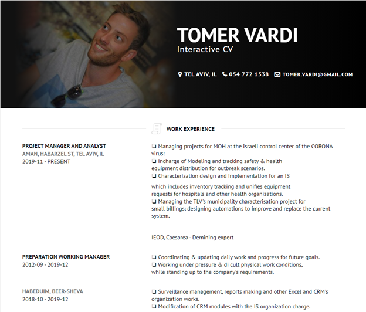

1. who is your's target Audience?
Me, recruiters
2. what is the site's main goal?
this site is made for me: for my experience in web programming and for my impression and self managing.
3. what is the site's sub goal?
it could be a own virtual CV and used for recruiters impression.
4. what is the actions that you want to be done at the site?
a. contact me by leaving a note or sending an email.
b. contact me by any other linked social media.
c. viewing my CV
5. what is the measure for the site success?
the num of viewers that made a contact.
6. to which World Content is the site aimed?
career / professional world content
1. A site sketch

2. The site Colors Scheme?
Primary: #111111
Secondary: #777777
Link: #45818E
Background: #FFFFFF
3. what is the site's fonts?
PT Sans.
4. Pictures?